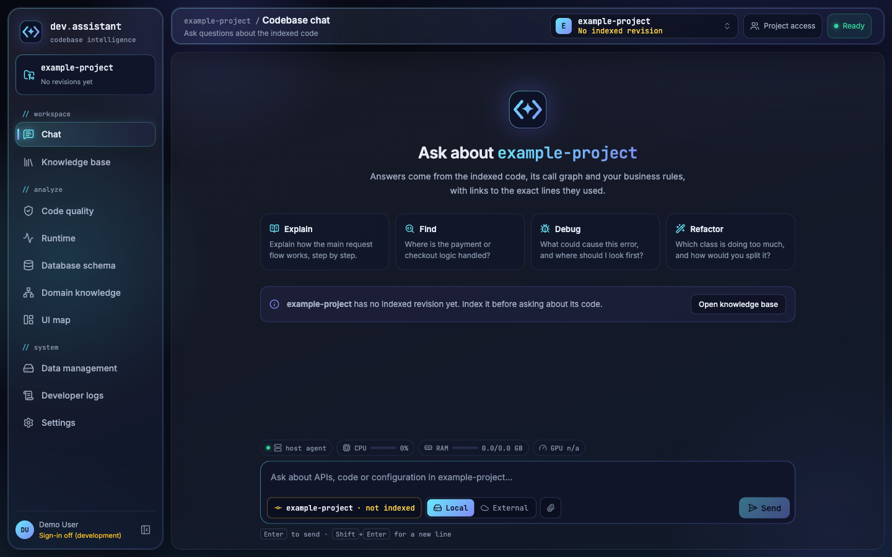

Upload and index
- Open Knowledge Base → Files and indexing.
- Enter a project slug. Use the same slug for later revisions.
- Upload a ZIP containing the source tree, or connect a Git branch if Git source is enabled.
- Enter the full lowercase Git commit SHA when the source belongs to a commit. The release accepts SHA-1 or SHA-256 identifiers.
- Start the parse/index action and wait for the revision to become ready.
- Select the ready project revision before opening Chat, Definitions, Database Schema, or Domain Knowledge.

Exact-byte retries for the same project and commit are accepted. Different bytes for an existing project and commit are rejected. Document uploads such as PDF and Markdown are outside this release workflow.
Ask a code question
- Open Chat and confirm the project picker shows the ready revision.
- Ask one specific question about a route, class, method, error, or table.
- Read the answer and open its source matches. Treat the cited files and lines as the evidence for the answer.
- If the answer includes a code block, check the validation note. PHP uses Phpactor/PHPStan when the configured language server is available.
- Use feedback when the route or answer was wrong; the router stores feedback for later similar queries.

Explore the indexed result
- Extracted Definitions: search symbols by name, FQN, owner, kind, or file.
- Database Schema: open a saved analysis or import SQL, DBML, or normalized schema JSON.
- Domain Knowledge: inspect concepts, relationships, entities, and behaviors from a saved analysis.
- Developer Logs: filter prompts, exceptions, and router fallbacks when a request fails.